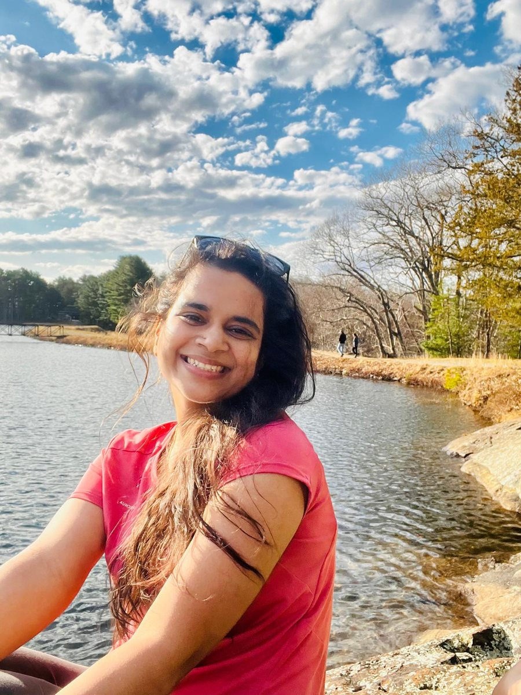

Law, research and practical tools for technology governance
I'm a lawyer focused on technology governance: how AI, platforms and data are regulated across countries, and what it takes for institutions to put those rules into practice.
My work spans comparative policy research, published analysis on AI, data law and climate technology, training for judges and government officials, and building open tools like the US AI Legislation Map. Before graduate school, I spent several years in regulatory and policy roles in India, working with government, industry and legal stakeholders.
I earned a Master of Arts in Law and Diplomacy at The Fletcher School, Tufts University, researching global inequalities in access to AI. At Digital Planet, I work on disinformation, platform governance, digital public infrastructure and cross-border data policy. I've also spoken at the United Nations High-Level Political Forum on global AI governance.
Beyond my research, I run Crossing Frontiers with a group of friends, an independent initiative helping young women from underserved communities in India find pathways to higher education and international opportunities.
What keeps me curious
Global governance
How countries and international institutions coordinate on technology, and where national approaches diverge.
- Cross-border AI governance
- Multilateral engagement
- Comparative regulation across five jurisdictions
Technology and international affairs
Digital diplomacy and the geopolitics of data, infrastructure and AI.
- AI governance
- Digital embassies and data sovereignty
- Cybersecurity
International business
How regulation shapes markets, competitiveness and cross-border business.
- Data laws as industrial policy
- Payment fraud and financial systems
- Compliance and market entry
Public policy
Turning research into practical guidance for governments and institutions.
- Platforms and disinformation
- Digital public infrastructure
- Climate technology and inclusion
Selected writing
- Apr 2026
- Dec 2025Data Laws as Industrial Policy: Why the US AI Industry Keeps Winning
Hitachi Center for Technology and International Affairs, The Fletcher School
- Jul 2025Erased Twice: Queer Lives on the Frontlines of Climate Displacement
Climate Policy Lab, The Fletcher School
- Jun 2025Climate, Code, and Justice: Why Inclusive Governance Matters for Emerging Climate Technologies
Climate Policy Lab, The Fletcher School
- Apr 2025Women in ClimateTech: Driving Economic Growth Through Innovation and Equity
Climate Policy Lab, The Fletcher School
- Mar 2025The Digital Divide in Climate Tech: Unequal Access to AI-Driven Solutions
Climate Policy Lab, The Fletcher School
- Nov 2024AI and the Copyright Dilemma: What India Needs to Do
Governance Now · Recognized in Tufts Kudos
Academic research
The Data Edge: U.S. Regulatory Flexibility and the Global AI Access Divide
MALD capstone, The Fletcher School, December 2025. Advisor: Professor Bhaskar Chakravorti.
Digital diplomacy research and writing
At Digital Planet, I research and write on digital diplomacy for policymakers and industry leaders.
- Digital embassies · Data sovereignty, infrastructure resilience and cross-border data sharing
- Cybersecurity and payment fraud · Cyber-enabled financial fraud and cross-border coordination
- AI governance · Regulatory divergence and governing AI across borders
Projects and initiatives
US AI Legislation Map
An interactive research tool I'm developing to track state-level AI laws, bills and official actions. It's a work in progress, and the data is still being expanded and verified.
See the current versionTap a state to see its AI laws and bills.
99 laws passed · 22 pending bills · 27 official guidance actions, as of October 14, 2026. Election layer: FEC results.
Both Sides
A platform in development that sets out the strongest arguments for and against on public policy questions.
Visit Both SidesDigital Oasis
Led a 12+ member team at the Fletcher IDEA Lab researching digital and emerging technology challenges.
ServiceMap India
Better access to essential services and citizen information through digital tools and local partnerships.
Crossing Frontiers
A mentorship initiative I run with a group of friends, helping young women from marginalized and underprivileged backgrounds in India pursue higher education, including study abroad. Together we offer one-on-one guidance on university applications, scholarships, funding and institutional processes.
Women's education · Educational equity · Mentorship
Where I've worked
- 2023 – Present
Digital Planet, The Fletcher School, Tufts University
Research Analyst
Research and writing on digital diplomacy, covering digital embassies, cybersecurity and payment fraud, and AI governance, alongside comparative research on disinformation and platform regulation.
- 2025
LunARC
Graduate Intern
Inclusive lunar governance, education and international collaboration on emerging space activities.
- 2024 – 2025
UNESCO / NBF Media Literacy Initiative for Judicial Officers, Delhi
Senior Project Manager and Lead
Designed and delivered 10+ training programs on AI, digital media and regulatory risk, coordinating ministries, judicial bodies and international agencies.
- 2020 – 2023
News Broadcasters Federation, Delhi
Public Policy, Governance and Regulatory Associate (founding team)
Part of the founding team of the News Broadcasters Federation, supporting the establishment of institutional self-regulatory mechanisms for India's news broadcasting industry.
Worked with government ministries, regulatory authorities, legal professionals and industry stakeholders on broadcasting policy, regulatory compliance and implementation of the Information Technology Rules, 2021, across approximately 150 member news channels.
- 2019 – Present
Black & White Enterprise, Delhi
Policy Consultant and Founder
Advises corporate clients and trade bodies on regulatory compliance, market entry and policy alignment.
Earlier clerkship, internships and fellowships: judicial clerkship with Justice Mahendra Dayal, High Court of Judicature at Allahabad, Lucknow Bench; legal internships at the Chambers of Salman Khurshid, Senior Advocate, the Chambers of Anand Prasad and Bharucha & Partners; a parliamentary internship with Shri Pankaj Chaudhary, Member of Parliament (Lok Sabha); the Citizens for Public Leadership Public Policy Fellowship, the Lokarpan Fellowship and LEAD India's World Affairs in Theory and Practice program.
Speaking and service
- 2025 · SpeakerUnited Nations High-Level Political ForumNew York. Presented on global AI governance.
- 2022 · ModeratorBroadcasting industry panel, Expo 2020 DubaiChaired by the Secretary, Ministry of Information and Broadcasting, India.
- 2022 · ContributorBureau of Indian StandardsCommittee on news industry standardization.
- Co-founder and co-leadSpace and Broadcast Policy Student Group, The Fletcher School
Education
- 2026MALD, The Fletcher School, Tufts UniversityTechnology and International Affairs; Global Governance and International Organizations; International Business. Affiliated with the Hitachi Center for Technology and International Affairs, the Leir Institute for Migration and Human Security, and Digital Planet.
- 2024 – 2025Harvard Kennedy SchoolCross-registered: Grand Challenges in Technology and Society (Prof. Latanya Sweeney); Digital Governance and Leadership in the Public Sphere (Prof. Anil Arora); Cybersecurity: Law, Policy, and Institutions (Prof. Bruce Schneier).
- 2024 – 2025Harvard Law SchoolCross-registered: Negotiation Workshop (Prof. Robert Mnookin and Prof. Douglas Stone).
- 2020B.A. LL.B. (Hons.), NUSRL RanchiHonours in International Law. Top 10% of class.
- BarAdvocate, Bar Council of DelhiEnrolled November 2020.
- CertificationsSelected courses and certificationsWorld Intellectual Property Organization, General Course on Intellectual Property (2019) · UN CC:Learn, Gender and Environment (2019) · Centre for Civil Society, ePolicy for Young Leaders (2020) · NGPL Sansad Ratna Awards Committee, Polity, Governance and Politics (2020) · Leiden University via Coursera, International Law in Action: the Arbitration of International Disputes
Selected recognition
Honos Civicus Society
Tisch College of Civic Life, Tufts University
Recognizes graduating students who have shown sustained commitment to community service and civic engagement during their time at Tufts.
Harry Radliffe Award
Fletcher Alumni of Color Association, The Fletcher School
Young Achiever Award
CMO Asia
When I'm not reading AI bills

Creative pursuits
I'm learning painting, watercolors and sketching, and I recently took up the ukulele. If you play too, message me. I'd love to find people to practice with.
I trained in Indian classical dance for seven years and studied the tabla for a year. Music and dance have long been an important part of my life.
Outdoors and literature
As much as I love diving deep into my computer, I'm just as happy outdoors. I love running, hiking and any excuse to be out in the fresh air.
I'm also an enthusiastic reader, especially of literature, and lately I've been making a conscious effort to read more Hindi literature.
Languages and writing
I'm fluent in English and Hindi, and I'm learning Spanish.
I also write personal essays and reflections on Medium. I keep that writing separate from this site, but feel free to ask me for the link.